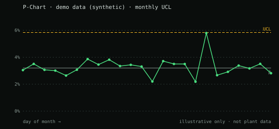

QualityHub — one web platform for the plant's quality work, built with zero third-party packages.
Complaints with guided 8D, RMA/scrap, lessons learned, P-Chart/PPM, PCI releases, failure analysis and warranty in one place, replacing scattered Excel workbooks and keeping the plant's official formats.
problem
Customer complaints, RMA/scrap, lessons learned, PCI releases, failure analysis and warranty data lived in separate Excel workbooks. Each one had its own layout and owner, and the official plant formats had to be preserved.
The first attempt was an Excel macro. It stopped working for a practical reason: corporate antivirus blocked the .exe. That constraint pushed the project to the web.
solution
A web application the plant can reach from a browser, so there is nothing to install on any PC. Users, roles and sessions are handled by a Python web server; every action goes through an engine with a fixed list of commands; data lives in one SQLite database per department, with a nightly backup that is verified.
modules
| Module | What it does |
|---|---|
| Complaints + 8D | Customer complaints with a guided 8D, in the official format. |
| RMA / scrap | Returns and scrap tracked in the same system as the complaint. |
| Lessons learned | A searchable record instead of a workbook someone has to remember. |
| P-Chart / PPM | P-Chart with a monthly UCL and daily data capture. |
| PCI releases | Release records kept with the rest of the quality evidence. |
| Failure analysis | A 48-hour deadline per part. |
| Warranty | Warranty cases alongside complaints and failure analysis. |
| LPA audits | Layered process audit records. |
| Alerts | E-mail alerts when a 3D or 8D is overdue. |

security
| Control | Detail |
|---|---|
| Password hashing | PBKDF2-SHA256 · 600,000 iterations |
| Brute force | lockout after 5 attempts |
| Sessions | HttpOnly and SameSite cookies; CSRF protection |
| Access control | 7 roles |
| Traceability | Audit log |
| Browser hardening | Content-Security-Policy; no CDN |
| Attack surface | One inbound port; no pip/npm packages |
| Size | ~25,000 lines of code |
status
what I learned
- A blocked .exe is a design requirement: the move from an Excel macro to a web app came from what IT would actually allow.
- The dependency-free architecture was designed to make the security review easier: less to audit, fewer things to patch.
- Keeping the plant's official formats meant the tool had to fit the process, not the other way around.
stack
Confidentiality: no part numbers, customers, people, internal line names, real logs or real screenshots appear on this site. Charts are labeled demo data.